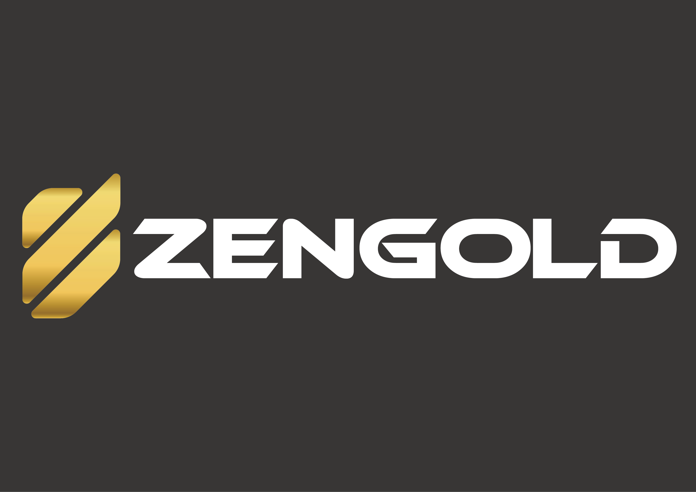

<section id="newsNmedia">
    <div class="container">
        <div class="title center">
            <h2>News</h2>
            <div class="col-md-12" style="text-align: left;">
                <h3>ZenGold ICO announcement</h3>
                <hr>
                
                <p>
                    ZenGold, a project developed on Metaverse Blockchain, announces its ICO campaign on Friday, May 26, 2017 3:00 PM (GMT+8).</p>
                <p style="text-align: justify">ZenGold aims to create crypto assets that are backed by physical gold in order to enable investors to instantly buy and transfer even a very small fraction of gold anywhere in the world while having pertinent asset information securely stored onto an unalterable Metaverse Blockchain.

                </p>
                <p style="text-align: justify">
                    The ICO will last for 15 days. The closing date is Friday, June 9, 2017 3:00 PM (GMT+8). The total number of 63.000.000 ZGC tokens will be distributed within the campaign (if the tokens are sold out before the closing date, the campaign will end earlier).
                </p>
                <p style="text-align: justify">   BTC, ETH, ETC and ETP will be accepted during ICO campaign. The “Early bird” bonuses (up to 20%) will be announced by ZenGold for those contributing at the early stages of ICO.
                </p>
                <p style="text-align: justify">
                    ZGC tokens will enable its holders to use gold as an effective payment mechanism and credit system while benefiting from the transactional functionalities of Blockchain technology. The gold-backed tokens will be minted into existence only by the purchase of an actual gold. Thus 1 ZGC token will always represent the ownership of 1 gram of the physical gold securely stored in Shanghai Gold Exchange. The developing team has set its sights on establishing ZGC token as a better alternative to the traditional form of storing value and making a strong case for reshaping the financial service industry in the future.
                </p>
                <p style="text-align: justify"> By providing efficient governance and security strategy as well as clear business vision, ZenGold invites the investors to become early holders of ZGC tokens. Those interested can invest via three different channels:
                </p>

                <ul>
                    <li><a target="_blank" href="http://zengold.org/">
                        http://zengold.org/ (accepting payments in BTC, ETP and ETH).
                    </a>
                    </li>
                    <li><a target="_blank" href="http://ico365.com"> www.ico365.com (accepting payments in BTC and ETH).
                    </a>
                    </li>
                    <li><a target="_blank" href="http://btc9.com/Ico" > www.btc9.com/Ico (accepting payments in BTC).</a></li>
                </ul>
                <p>
                    For the further information, please visit ZenGold official webpage: http://zengold.org/ or connect with us through the social media:
                </p>
                <ul style="list-style-type: none">
                    <li>
                        Slack: zengold.slack.com
                    </li>
                    <li>
                        Twitter: @zen_gold
                    </li>
                    <li>
                        Bitcointalk: https://bitcointalk.org/index.php?action=printpage;topic=1921556.0
                    </li>
                    <li>
                        Medium: https://medium.com/@ZenGold
                    </li>
                    <li>
                        Facebook: ZenGold
                    </li>
                </ul>
                <br>
                <p style="text-align: justify">
                    Step into the new reality with us!
                </p>

            </div>

        </div>
    </div>
</section>